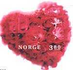
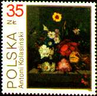
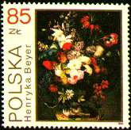
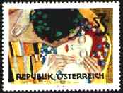
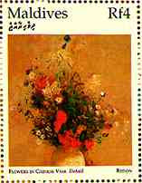
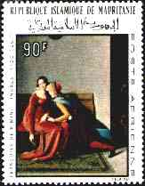

|

To all female stamp collectors in the world
St
Valentine's Day is regarded as a holiday celebrating lovers. It is held on February 14 by the custom of
sending greeting cards or gifts to express affection to a chosen partner. The cards, known
as valentines, are generally sent anonymously and are often designed with hearts to
symbolize love.
Tip: To get some
supplemental information about the works of art displayed, please point to them with the mouse
index.
 |
 |
 |
 |
The holiday probably derives from the ancient Roman feast of Lupercalis (February 15). Originally a festival for shepherds, it was celebrated in honor of Faunus. Its primary purpose was to secure fertility for the fields, the flocks, and the shepherds themselves.
 |
 |
 |
 |
 |
The festival gradually became associated with the feast day (February 14) of two Roman martyrs, both named St Valentine, who lived in the 3rd century, but about whom nothing specific is known. St Valentine has traditionally been regarded as the patron saint of lovers. An early reference is found in the works of Chaucer, who states that birds pair on St Valentine's Day. The practice of calling oneself a "Valentine" and asking one's beloved to be the same, is referred to in the Paston Letters, the largest surviving collection of 15th-century English correspondence written by the Paston family and their neighbors in Norfolk. After Microsoft Encarta 1996.
 |
 |
 |
 |
First version of the page was announced on 14th of February 1999 on the philatelic newsgroups RCSD: "Please accept my gift dedicated to all women stamps collectors worldwide, by visiting: http://www.values.ch/valentine.htm. Love, Victor Manta."
Please take a look at some reactions to my announcements, posted on the RCSD newsgroup and/or received by e-mail:
-
Thank you, Victor! That is very, very sweet. It's nice to get bouquets now and then.
-
What a wonderful idea, and what a beautiful gift to all women stamp collectors on such a special day ! Thanks from a woman stamp collector.
-
What a beautiful thought, Victor. My wife and daughter loved it. :-).
-
I just wanted to tell you that I forwarded this message to 14 female stamp collectors who are not active on this newsgroup. You are a sweetie.
-
Victor, you are very sweet to do this. In addition to the women I have previously told about this site, this year I forwarded it to the women students from my on-line stamp collecting course and the women members of the Art Cover Exchange. You brought smiles to many faces again this year.
Other pages on this site that are dedicated to women:
| Flowers | Beautiful women | Love | Nudes | Decembre |
|
||